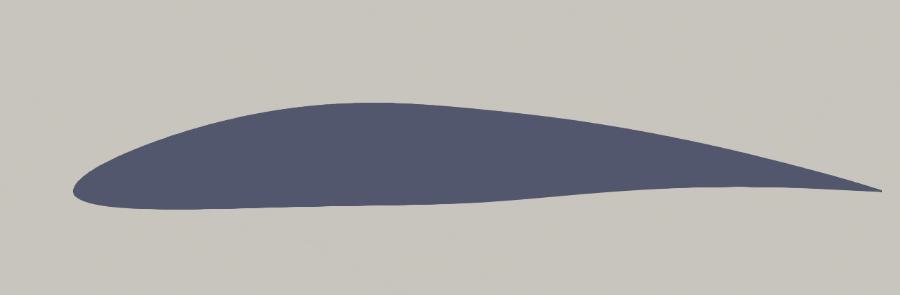
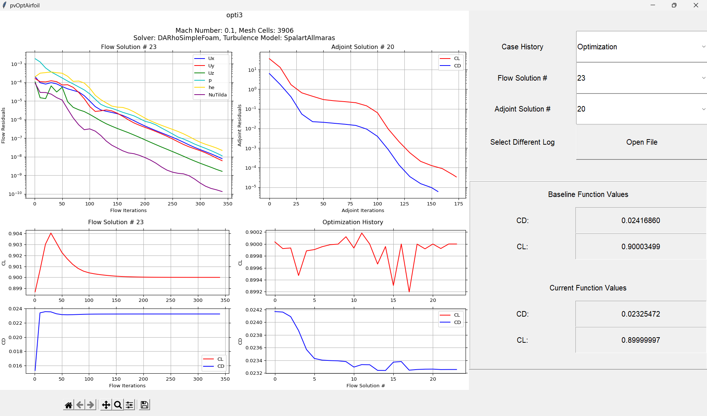
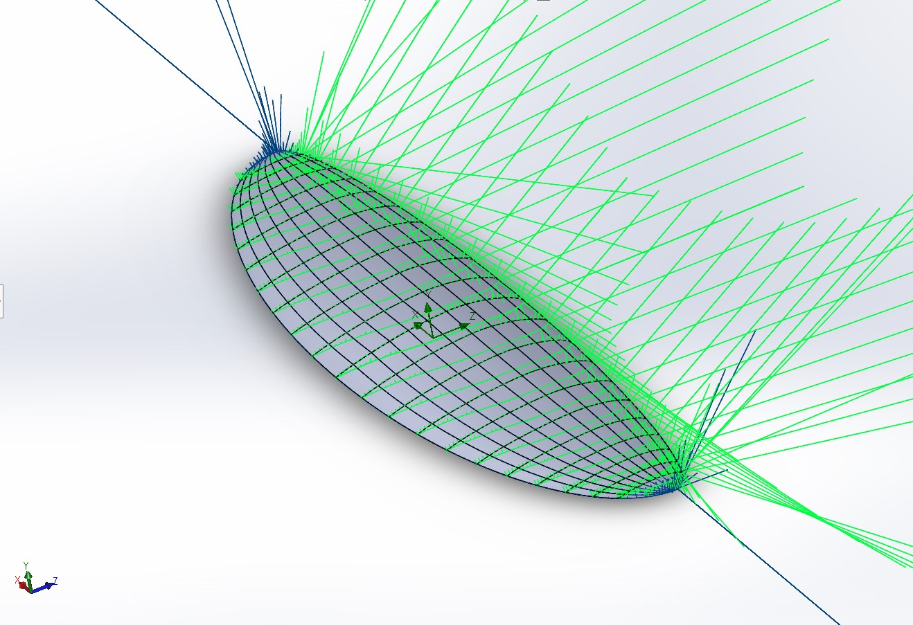
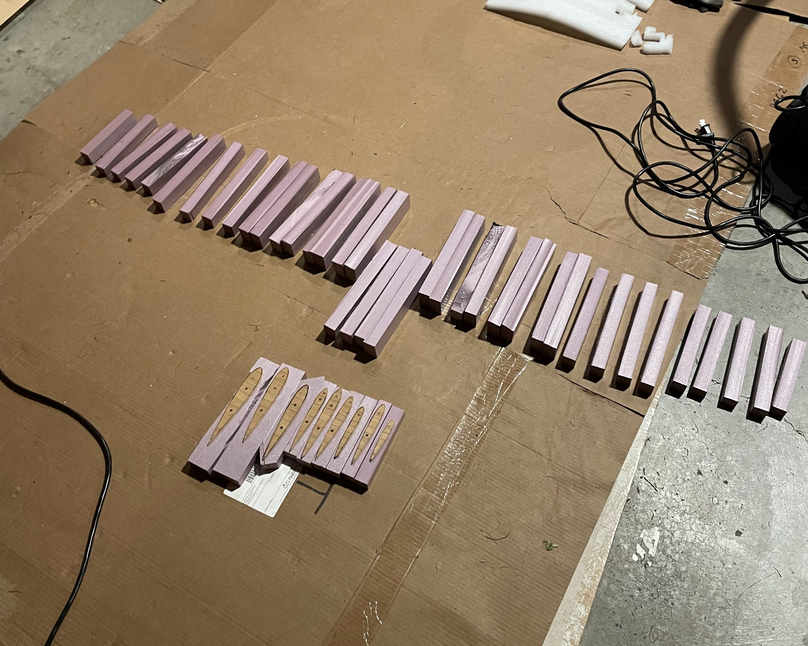
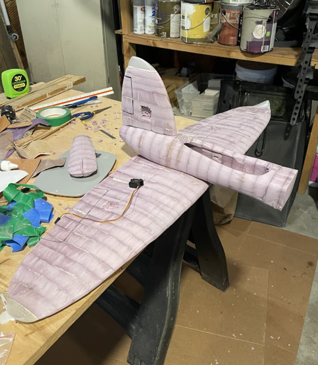
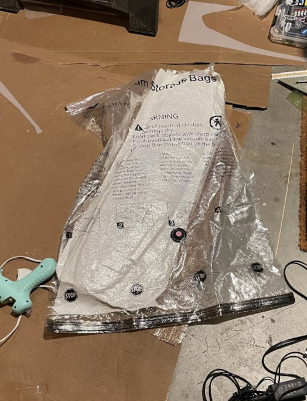
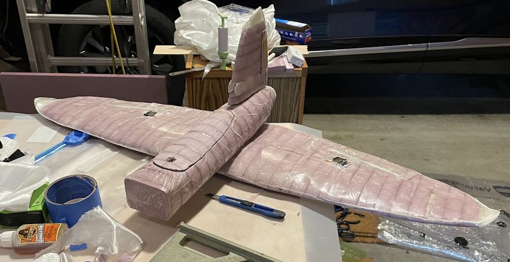

After building and flying a first person view quadcopter, I became interested in the applications of FPV systems in a fixed wing aircraft. I also had seen people such as Daniel Riley (rctestflight) experimenting with ardupilot software to add autonomy to small radio controlled aircraft. I began to explore how I could use everything that I have learned in university at Iowa State University to build a autonomous fixed wing system of my own.
After building and flying a first person view quadcopter, I became interested in the applications of FPV systems in a fixed wing aircraft. I also had seen people such as Daniel Riley (rctestflight) experimenting with ardupilot software to add autonomy to small radio controlled aircraft. I began to explore how I could use everything that I have learned in university at Iowa State University to build a autonomous fixed wing system of my own.
I started this project by making a rough sketch of how the aircraft would look. My goal was to achieve long flight times while also being able to carry a FPV system as well as a GoPro 8. With these two conditions in mind, I decided to mount the camera up front and opt for a flying wing/flying plank design with a single main plane and single vertical stabilizer. I began modeling the wing by optimizing a NACA4412 airfoil in Paraview as to minimize drag and optimize the mift coefficient at my desired cruise speed of 75 miles per hour.


Above is the final airfoil shape as result from the optimization. In the end the airfoil achieved a lift coefficient of around 0.9 as well as a drag coefficient of around 0.023. Later I realized that the airfoil had a negative pitching moment however, with my choice to forgo a rear horizontal stabilizer, the airfoil needed to produce a positive pitch moment to maintain a decent ammount of natural longitudinal stability. This was corrected during the manufacturing process by inverting the rear 5-10% of the airfoil to redirect the airflow.

I decided to go for an elliptical wing shape as they produce little induced drag compared to other wing shapes. I wanted to reduce drag generated by the aircraft wherever I could since there would be a camera with a flat front on the nose producing a large amount of drag. After modeling the wing I continued by modeling the fuselage and vertical stabilizer, as well as other small components such as the control surfaces, servos, camera mounting plates, and more. I then ran some simple solidworks flow simulations to better unserstand how the airflow would interact with the body and the forces it would create. These results told me I needed to correct the pitching moment of the aircraft as well as add some vortex generators where the wing meets the body to prevent some minor flow separation.

After procurment of all electronics and materials, I began to build the structure of the airplane. I modeled the plane to be built in three sections all hotwire cut foam core fiberglass composites. The wing was divided into 27 sections all hotwire cut from pink insulation foam and cross section airfoil templates. The sections were then glued together after inserting the dual carbon fiber spars into the hotwire cut cavities. The fuselage and tail were both hotwire cut and glued in a similar fashion.


Once all the sections were cut and glued with their respective spars in place, I cut out cavities for the servos, camera, and wires to run inside the foam cores, as well as attatching the 3d printed wingtips and camera mounting plates in the vertical stabilizer where the FPV camera was to be mounted. After the respective components were installed, the model was ready to be covered in fiberglass.

I covered the wing in a single layer of 2 ounce fiberglass with a dual layer near the trailing edge where the foam core thinned out. The glass was applied with the fibers at a 45 degree angle to provide strength in both longitudinal and latitudinal directions as well as assist the spars in resisting torsion in the wing. The vertical stabilizer and fuselage Layup followed a similar procedure with a single layer of glass. The components were then layed in storage hand pump vaccum bags with mold release covered mylars as well as paper towels for a breather layer and left 24 hours to cure.

After all sections were allowed to fully cure they were removed and assembled where they would be sanded and prepped for paint. This project is currently still in development and currently the Electronic components are being installed and weight and balance being checked with different battery and prop configurations. Once all electronics and hardware are installed, I can begin setting up the flight control link and FPV system. Right now I am reading up on the ArduPilot and its functionality in preparation to implement its autonomy capabilities.